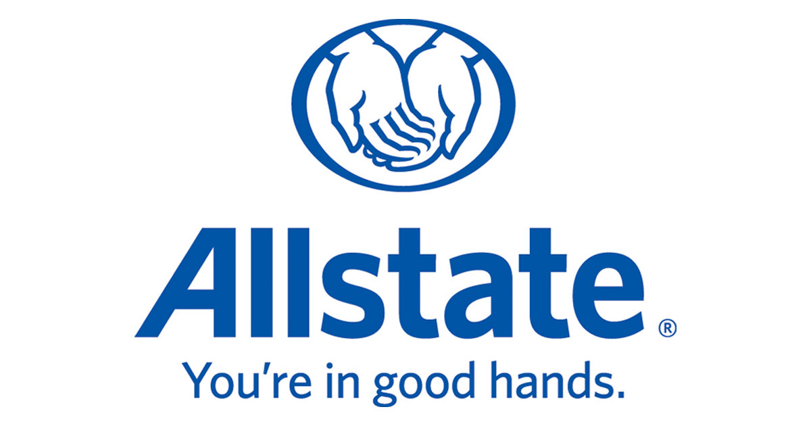

Hi, my name is Louise!
I'm a recent graduate from Cal Poly, San Luis Obispo. I am currently looking for full-time opportunties in software development or front-end web development to apply my skills further.
I received my degree in Software Engineering where I've completed coursework to produce software products by applying the software development life cycle. I will be working on different certifications to pass time while sheltering in place.
My site is is continuously in development, but there will be more content coming up! Thank you for visiting, and I hope to chat with you.
About Me

Transfer Student | Woman in Computing | Filipino-American | POC Advocate
At an early age, I fell in love with STEM but didn't know what I wanted to pursue. I decided to attend community college two days before my high school graduation due to the fear of not finding my passion while spending lots of money at a university. The decision was upsetting at first, but once I emerged I found myself learning my peer's journeys to pursue higher education. Some where straight out of high school like me, while others had a family to care for. This led me to realize that I love learning new things while solving real life complex problems, especially in engineering. So I switched from Biology to Software Engineering and completed coursework to transfer to Cal Poly.
At Cal Poly, I was challenged both in academia and personally. I dealt with a huge culture shock where I found myself being one of five women in a CS class, as well as transitioning to the quarter system. I utilized my resources heavily and was actively involved in different organizaitons. The resource I used the most was Women Involved in Software and Hardware, where in my last year I served as the club's Vice President. In my senior year, I was put in a team of five individuals to complete a 9-month software engineering capstone project, where we worked with an outside customer on a product they would like to use for their company. Our team's project was to create a web-application for policy makers and potential Central Coast residents to view data about the area through visualizations. Details about the project is located on the Projects section.
I'm a week after completing my undergrad at Cal Poly and reflected on the seven years it took me to get my Bachelor's. I realized that my passions are in the design process of developing products and finding ways to appeal customers to certain layouts, colors and structures in the apps we use. This summer, I'm diving into concepts in UI/UX design and creating front-end products. I feel like with these skills and applying my passion in creating inclusive tech, I'm sure I will make an impact.
Work Experience
CareBox Gifting
I'm contributing to this project as a lead software engineer and product manager. I oversee a team of five software engineers for an up-and-coming startup. We are creating a web application for our customer's gifting site so they can aide others in picking out gifts for their loved ones.

I interned for two summers as an Automation Engineer at Allstate's CompoZed Labs. During both internships, I worked on a software team developing and maintaining microservices to improve in-house processes. Both teams used an Extreme Programming (XP) workflow, in addition to practicing Test-Driven Development and Paired Programming. Some of my main accomplishments was converting an application's front-end from Agular to React and improved performance of emails when a monitor goes down. I also hosted a resume workshop for 10 interns.
Projects
Current Projects
I'm creating a simple notetaking web application. It is currently in development and will be on GitHub soon.
PM Pro
Pull request analyzation tool myself and another student created for our Senior Project.
REACH
Web application for users to view data about the Central Coast as a goal to create more jobs and affordable housing in the area. This was a nine month Software Engineering Capstone Project where I worked on a Scrum team and got hands-on experience of the Software Development Life Cycle. The link takes you to our application's deployment site, where our current domain to the project is stale due to transferring code to the next developers. However, you can see user flow of our project through our deployment site.
Features
Throughout my time at Cal Poly, I was featured in a number of articles and even a short film. Recently, I was named one of WIB's 30 Under 30 Inspirational Women. You can find that and the other articles listed underneath.
- Women in Business Association 30 Under 30 Article
- Culture of Code. This is a short film about facing challenges as a woman in tech and overcoming them. I had the opportunity to play as a mentor for the main character.
- Diversity is Due Panel. As diversity director of WISH during the 2018-2019 school year, I collaborated with Color Coded to invite Google engineers to talk about diversity in tech. We even got Anthony Mays as one of the panelists!
- How to Deal with Homesickness While at an Internship. This was an article I wrote for Rewriting the Code after interning in Charlotte, NC and how I overcame homesickness.